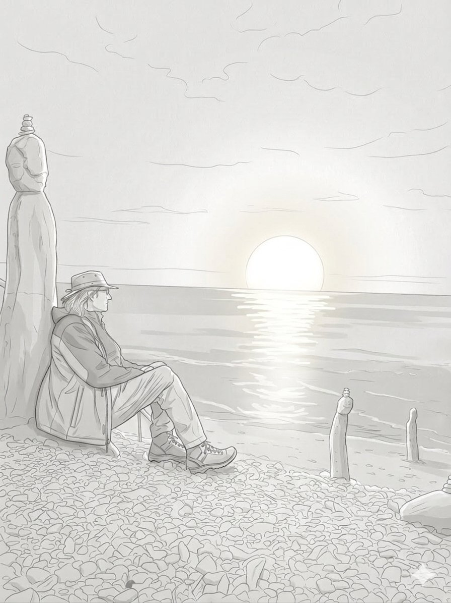
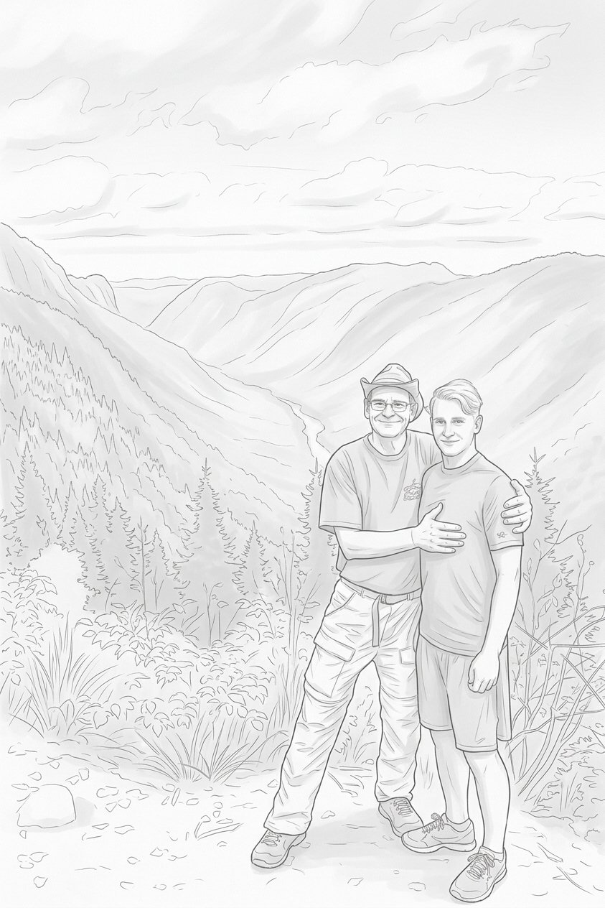

Depuis 35 ans, Les Adaptations Accès-Cible fabriquent des équipements de positionnement sur mesure. Pas en série — un à la fois, en dialogue direct avec l'ergothérapeute. Parce que le bon équipement change tout.

En 1990, au CRME, le constat était clair : des équipements standardisés qu'on modifiait, ajustait, bricolait — sans jamais vraiment y arriver. Claude a décidé de faire l'inverse : concevoir à partir de la personne, pas d'un gabarit.
35 ans plus tard, notre philosophie reste la même. Vous décrivez la personne. On discute, on dessine, on fabrique. Pas de gabarit rigide. Toujours une solution — la vôtre.

Ébéniste et spécialiste en ergonomie, Claude a consacré 35 ans à concevoir des équipements de positionnement sur mesure. Ancien professeur à l'École du meuble de Montréal et spécialisé en maux de dos et ergonomie industrielle, il a fabriqué la première chaise ERGO à la main en 1990. Après l'incendie de juin 2023 qui a tout détruit, il a rebâti. Parce que la mission était plus grande que le sinistre.
Guillaume a grandi avec l'entreprise. Il connaît Les Adaptations Accès-Cible de l'intérieur — les procédés, chaque détail de fabrication, et la relation de confiance tissée avec les ergothérapeutes au fil des ans. Il prend la relève avec une seule conviction : ce qui a été bâti mérite de durer.
De Camp Papillon en 1965 à l'atelier reconstruit en 2024 — une histoire d'obstination, de savoir-faire transmis, et d'un incendie qui n'a pas eu raison de la mission.
Lire toute l'histoire →« Je décris le bénéficiaire. On conçoit ensemble. Le résultat dépasse toujours mes attentes. »
— Ergothérapeute, région de Montréal